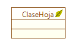

|
Perfil Ingeniero de Desarrollo |
|
Este
perfil está ligado a la impelementación y mantenimiento de soluciones
de software. Para el caso Coloso este perfil se ve expresado a través
de las herramientas de desarrollo IAE y los diagramas de marcos.
 Figura 1. Representación de una Clase Hoja |